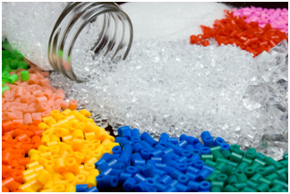
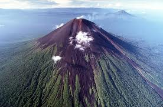
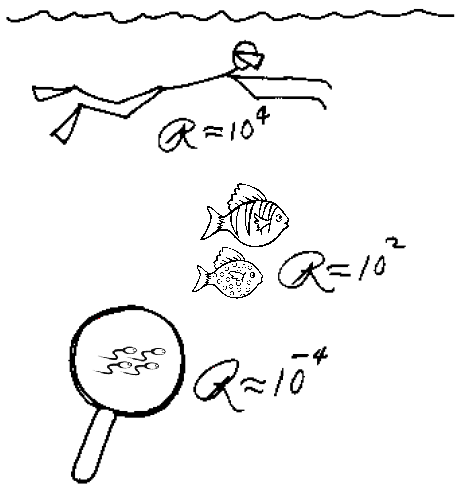

S3 Požega 2013 (28. srpnja - 5. kolovoza): PROGRAM
PROJEKTI
- Polimeri: umjetnost, znanost i tehnologija
- Drevni vulkani u Slavoniji
- Organizmi s izmijenjenim genomom - kako i zašto?
- "Touch Screens" su prošlost
- Kad fizika sretne biologiju u području tekućina
- Umijeće igranja igara
RADIONICE
- Pitanja srca
- Pogled u budućnost - hoće li nam i frižider biti umrežen?
- Prolazak kroz polupropusnu membranu – zakon selektivne difuzije
- Mogu li strojevi misliti?
- Lov na zagađenje zraka - uloga lišajeva kao bioindikatora
- Mogu li roboti vidjeti bolje od nas?
PREDAVANJA
PROJEKTI
Polimeri: umjetnost, znanost i tehnologija
Polimeri su umjetno ili prirodno dobiveni materijali koji igraju važnu ulogu u znanosti, industriji i našem svakodnevnom životu. Oni predstavljaju građevne jedinice gotovo svega čega se možemo sjetiti ( doslovce, od plastične žlice za kavu do zrakoplova) i olakšavaju nam život na neopisivo mnogo načina. PE, najlon, teflon, kevlar and pleksiglas su postali toliko popularni da se danas godišnje proizvede više od 200 milijuna tona dotičnih polimera. Polimere ne samo da odlikuje jeftinost, izdržljivost i jednostavnost izradbe različitih oblika, već i cijeli raspon poželjnih kemijskih i fizikalnih obilježja koja je moguće dobiti ako imate znanja i vještine iz kemije polimera. Ako mislite da su polimeri one želatinaste tvari koje koriste samo ludi znanstvenici, pažljivo razmislite. Ljudska bića su u stvari sačinjena od polimera! DNA, RNA, proteini i polisaharidi su sve polimeri, a do evolucije samog života na Zemlji je došlo upravo zahvaljujući polimerskim svojstvima tih biomolekula.
Cilj ovog projekta je istražiti intrigatnu kemiju polimera. Sintetizirat ćemo nekoliko umjetnih te u prirodi postojećih polimera i izmjerit ćemo njihova fizikalna i kemijska svojstva. Sudionici na ovom projektu će se upoznati s kemijom polimera i makromolekula te pritom steći vrijedne laboratorijske vještine i znanja. Tijekom našeg rada koristit ćemo napredne metode kao što su osmometrija napona pare i jednostavna termogravimetrija.
 Edi Topić
Edi Topić
Prirodoslovno-matematički fakultet, Sveučilište u Zagrebu
Edi je student prve godine kemije na Sveučilištu u Zagrebu. Zanimaju ga različita još neistražena područja kemije materijala kao što su primjerice organometalni polimeri i egzotični semikonduktori, no također ga zanima i fizika i svi oblici eksperimentalne znanosti. Edi je radio kao mentor na 21. Ljetnoj školi računarstva i dobitnik je dviju brončanih medalja na Međunarodnoj kemijskoj olimpijadi u Ankari i Washingtonu. U slobodno vrijeme Edi voli raditi „uradi-sam“ projekte, kuhati i svirati gitaru.
Drevni vulkani u Slavoniji
Glavni cilj geologije kao znanosti je razumjeti i objasniti povijest planete Zemlje te evoluciju okoliša i života na njoj kroz cijelu njezinu prošlost. Naše proučavano područje (Slavonija, Hrvatska) je tijekom geološke prošlosti prošlo kroz cijeli niz promjena koje su rezultirale bitno drugačijim i neočekivanim okolišima te životnim oblicima. U jednom razdoblju povijesti naše planete, područje Slavonije je bio duboki ocean mjestimično uznemiren eksplozijom vulkanskog otoka, čiji se dokazi danas vide u geološkoj kompleksnosti slavonskih planina.
Kako se planet Zemlja konstantno mijenja, da bi se mogle predvidjeti buduće promjene potrebno je sagledati prošle.
Cilj ovog projekta je da sudionici nauče vještine i programe potrebne za točno prikupljanje, razumijevanje i interpretaciju geoloških podataka. Sudionici će obaviti terenski rad i samostalno napraviti sedimentološku, paleontološku i facijesnu analizu prikupljenih i dobivenih uzoraka koristeći se mikroskopima i referentnom literaturom. Očekivan cilj je da će sudionici otkriti raznolike tipove okoliša razvijanih na određenim izdancima i njihovu geološku starost. Završetkom ovog projekta, polaznici će se upoznati s osnovama geologije te oruđima u razumijevanju i objašnjavanju svijeta oko nas. Proći će kroz terensko istraživanje, analizu i interpretaciju prikupljenih uzoraka koristeći klasične metode i programe.Na taj način ovaj projekt će dati polaznicima uvid u način čitanja tragova prošlosti, jedinih svjedoka davno nestalih svjetova.
 Jelena Španiček
Jelena Španiček
Prirodoslovno-matematički fakultet, Sveučilište u Zagrebu
Jelena je završila diplomski studij na Odsjeku za geologiju i paleontologiju na Prirodoslovno-matematičkom fakultetu, Sveučilište u Zagrebu, gdje je kasnije upisala i poslijediplomski studij. Tijekom studija susrela se s mnogim područjima geologije, no oduvijek je pokazivala poseban interes za evoluciju. Evolucija svemira, Zemlje i života, kao i otkrivanje kako i zašto dolazi do promjena i činjenica da ništa nije stalno, su goruća pitanja koja su ju privukla ka geologiji, točnije prema paleontologiji..
Organizmi s izmijenjenim genomom - kako i zašto?
 Organizmi s umjetno promijenjenim genetičkim materijalom nazivaju se genetički modificirani organizmi (GMO). Takvi organizmi sadrže vlastite promijenjene ili potpuno strane gene koji se nazivaju “transgeni”. U zadnjih dvadesetak godina GMO je bio tema opsežnih i kontroverznih debata između stručnjaka i ne-stručnjaka diljem svijeta vezano uz njegovu upotrebu u proizvodnji hrane, lijekova i cijepiva. Genetički modificirana (GM) hrana se proizvodi u značajnoj mjeri, osobito u SAD-u, no postoje također i tzv. GMO slobodne zone gdje je zabranjen uzgoj promijenjenog sjemena, kao i prodaja GM hrane. Pravilna manipulacija GMO-a se regulira kako bi se spriječilo njegovo nekontrolirano i neželjeno širenje u okolišu. GMO se često smatra opasnim za ljudsko zdravlje i okoliš zbog različitih razloga koji uključuju mogući prijenos gena u druge organizme, osobito gena za antibiotsku rezistenciju, smanjenje biološke raznolikost, razvoj alergija i gastrointestinalnih problema. Prva genetički modificirana biljka je bio duhan, no prva komercijalno dostupna biljka je bila rajčica sorte Flavr Savr, koja je imala blokiran gen odgovoran za dozrijevanje. Postoje također mnogi drugi primjeri genetički modificiranih organizama, primjerice komarci rezistentni na malariju, GM fluorescentna riba zebrica, zlatna riža i mnogi drugi primjeri. Arabidopsis thaliana (hrv. uročnjak) je često korišten modelni organizam u molekularnoj biologiji. Kao i druge biljke, uročnjak je moguće transformirati genima koji će mu podariti bolja svojstva, primjerice zaštitu protiv kukaca, toleranciju prema herbicidima, itd. U današnje vrijeme je od iznimne važnosti znati kako detektirati prisutnost transgena u organizmima i kako se obhoditi s takvim organizmima.
Organizmi s umjetno promijenjenim genetičkim materijalom nazivaju se genetički modificirani organizmi (GMO). Takvi organizmi sadrže vlastite promijenjene ili potpuno strane gene koji se nazivaju “transgeni”. U zadnjih dvadesetak godina GMO je bio tema opsežnih i kontroverznih debata između stručnjaka i ne-stručnjaka diljem svijeta vezano uz njegovu upotrebu u proizvodnji hrane, lijekova i cijepiva. Genetički modificirana (GM) hrana se proizvodi u značajnoj mjeri, osobito u SAD-u, no postoje također i tzv. GMO slobodne zone gdje je zabranjen uzgoj promijenjenog sjemena, kao i prodaja GM hrane. Pravilna manipulacija GMO-a se regulira kako bi se spriječilo njegovo nekontrolirano i neželjeno širenje u okolišu. GMO se često smatra opasnim za ljudsko zdravlje i okoliš zbog različitih razloga koji uključuju mogući prijenos gena u druge organizme, osobito gena za antibiotsku rezistenciju, smanjenje biološke raznolikost, razvoj alergija i gastrointestinalnih problema. Prva genetički modificirana biljka je bio duhan, no prva komercijalno dostupna biljka je bila rajčica sorte Flavr Savr, koja je imala blokiran gen odgovoran za dozrijevanje. Postoje također mnogi drugi primjeri genetički modificiranih organizama, primjerice komarci rezistentni na malariju, GM fluorescentna riba zebrica, zlatna riža i mnogi drugi primjeri. Arabidopsis thaliana (hrv. uročnjak) je često korišten modelni organizam u molekularnoj biologiji. Kao i druge biljke, uročnjak je moguće transformirati genima koji će mu podariti bolja svojstva, primjerice zaštitu protiv kukaca, toleranciju prema herbicidima, itd. U današnje vrijeme je od iznimne važnosti znati kako detektirati prisutnost transgena u organizmima i kako se obhoditi s takvim organizmima.
 Marija Klasić
Marija Klasić
Prirodoslovno-matematički fakultet, Sveučilište u Zagrebu
Marija je završila molekularnu biologiju na Prirodoslovno-matematičkom fakultetu u Zagrebu. Trenutno je doktorantica i asistentica na istoj instituciji. Njezina glavna tema istraživanja je epigenetika u pacijenata s upalnom bolešću crijeva, no također joj se sviđa biljna stanična biologija. Tijekom studija bila je studentski demonstrator na nekoliko kolegija i sudjelovala je na radionici iz područja biljne biologije tijekom Noći biologije na Biološkom odsjeku. Kada ne radi u laboratoriju ili sa studentima, Marija pleše hrvatske tradicionalne plesove i vodi brigu o biljkama i kućnim ljubimcima u okolicu svoje kuće.
"Touch Screens" su prošlost
 Jeste li ikad zamišljali da kontrolirate svoje računalo bez tipkovnice i miša? Mijenjate TV programe bez daljinskog upravljača? Sve to možemo napraviti koristeći koncepte obrade slike i strojnog učenja. Obrada slike područje je inženjerstva koje proučava načine kako možemo iz slike saznati određene korisne informacije. S druge strane, strojno učenje je područje umjetne inteligencije koje istražuje algoritme koji samostalno uče kako trebaju ragirati na određene situacije. Oba područja predstavljaju temeljna istražvanja na području inženjerskih I računarskih znanosti. U ovom projektu koristit ćemo umjetne neuronske mreže, jedan od najpoznatiji algoritama strojnog učenja, koji imitira procese u ljudskom mozgu.
Jeste li ikad zamišljali da kontrolirate svoje računalo bez tipkovnice i miša? Mijenjate TV programe bez daljinskog upravljača? Sve to možemo napraviti koristeći koncepte obrade slike i strojnog učenja. Obrada slike područje je inženjerstva koje proučava načine kako možemo iz slike saznati određene korisne informacije. S druge strane, strojno učenje je područje umjetne inteligencije koje istražuje algoritme koji samostalno uče kako trebaju ragirati na određene situacije. Oba područja predstavljaju temeljna istražvanja na području inženjerskih I računarskih znanosti. U ovom projektu koristit ćemo umjetne neuronske mreže, jedan od najpoznatiji algoritama strojnog učenja, koji imitira procese u ljudskom mozgu.
 Nemanja Janković
Nemanja Janković
Sveučilište u Beogradu, Srbija
Nemanja je student druge godine elektrotehničkog fakulteta Sveučilišta u Beogradu. Sudjelovao je na Ljetnoj školi znanosti kao polaznik 2011. godine, a 2012. kao voditelj radionice. Nemanja je također sudjelovao na seminaru iz elektronike u Znanstvenom centru Petnica četiri godine. Osim u znanosti, Nemanja uživa provodeći vrijeme s prijateljima, igrajući stolni tenis te sudjelujući u svemu što uključije zabavu.
Kad fizika sretne biologiju u području tekućina
U procesu evolucije priroda je stvorila mnoge zanimljive fenomene. Neki od njih su kretanje insekata po vodi, pokretljivost flagele i cilie te transport vode u visokih biljaka. Bez obzira na brojna tumačenja ovih fenomana, razumijevanje fundamentalnih principa ovih fenomena leži u svojstvima tekućina, kao što su napetost površine, Reynoldsovi brojevi i difuzija. Spomenuti biološki procesi privlače značajnu pažnju ne samo zbog njihove važnosti u biologiji, već i zbog njihove praktične važnosti. Spomenuta svojstva možemo lako implementirati u uređaje kao što je umjetna cilia, ili pak razviti nove metode mjerenja kao što je test segmentacije crvenih krvnih stanica.
Tijekom projekta upoznat ćemo se s fizikalnim i biološkim svojstvima tekućina. Naše istraživanje započet ćemo mjerenjem nasumičnog kretanja molekula. Mjerit ćemo difuzijske konstante koristeći kameru i računalnu analizu. Nastavit ćemo s proučavanjem molekula koje se drže jedne za druge. Posljedica toga su dva efekta: prvi je napetost površine što ćemo mjeriti pomoću torzijske vage, a drugi je viskoznost, pojava kada se dijelovi tekućine kreću različitim brzinama. Viskoznost ćemo mjeriti s kapialarnim viskozimetrom. Spomenuta svojstva bit će upotpunjena zanimljivim eksperimentima i biološkim primjerima. Na kraju ćemo vidjeti kako spomenuta svojstva možemo iskoristiti za razvoj novih tehnologija. Polaznici projekta postat će svjesni važnosti fizike u objašnjavanju prirodnih fenomena, kao i interdisciplinarnosti u znanosti koja spaja mnoge grane.
 Nina Lopič
Nina Lopič
Sveučilište u Ljubljani, Slovenija
Nina je studentica diplomskog studija biofizike na Sveučilištu u Ljubljani. Njen glavni interes je eksperimentalna fizika s primjenom u biomedicini. Za svoj diplomski rad proučavala je uporabu stenta kao grijača tubularnog protoka u MRI-u. Za vrijeme studija, radila je kao demonstrator u znanstvenom centru u Ljubljani dvije godine. Hobi joj je sviranje oboe.
Umijeće igranja igara
 Razmišljanje nam je uvijek bilo zabavno, pogotovo tada kada nam je omogućavalo sticanje prednosti. Tada inteligencija postaje snaga. S druge strane, život je često poput igranja igara. Ljudi su igrali igre još od prahistorijskih vremena. Neke od tih igara iz Afrike, Kine i Indije popularne su još i danas. No, možemo li razumijeti kako ostvariti pobjedu? Možemo li znati koji potezi nas vode do pobjede i ne ostavljaju šanse protivniku? Ako možemo, možemo li naučiti kompjuter ili robota igranju igara? Odabir dobre i inteligentne strategije jako je bitan faktor u igranju igara ali i rješavanju stvarnih problema. Područje umjetne inteligencije daje podlogu za rješavanje ovakvih problema, no svaka igra je različita te zahtjeva posebnu dosjetku za uspjeh.
Razmišljanje nam je uvijek bilo zabavno, pogotovo tada kada nam je omogućavalo sticanje prednosti. Tada inteligencija postaje snaga. S druge strane, život je često poput igranja igara. Ljudi su igrali igre još od prahistorijskih vremena. Neke od tih igara iz Afrike, Kine i Indije popularne su još i danas. No, možemo li razumijeti kako ostvariti pobjedu? Možemo li znati koji potezi nas vode do pobjede i ne ostavljaju šanse protivniku? Ako možemo, možemo li naučiti kompjuter ili robota igranju igara? Odabir dobre i inteligentne strategije jako je bitan faktor u igranju igara ali i rješavanju stvarnih problema. Područje umjetne inteligencije daje podlogu za rješavanje ovakvih problema, no svaka igra je različita te zahtjeva posebnu dosjetku za uspjeh.
Na ovom projektu eksperimentirat ćemo s raznim igrama, najviše igrama na ploči. Cilj nam je dizajnirati i implementirati program koji će igrati igre protiv čovjeka. Također ćemo pokazati kako algoritmi pretrage, min-max heuristike, teorija igara, podržano učenje te evolucijski algoritmi mogu pomoći u rješavanju ovog zadatka. Kako bismo to ostvarili, koristit ćemo programski jezik Java. Naš program upravljat će robotskom rukom koja će pomicati figurice po ploči. Osim s konceptima umjetne inteligencije, polaznici će se upoznati i s različitim konceptima programiranja, računarske znanosti i računalnog vida.
 Zuzana Koyšová
Zuzana Koyšová
Sveučilište Comenius, Bratislava, Slovačka
Zuzana je studentica računarske znanosti na Sveučilištu Comenius u Bratislavi. Trenutno završava zadnju godinu diplmskog studija, a njen diplomski rad bavi se vizualizacijom protoka podataka. Uz to, Zuzana je kreativna osoba te ju, uz programiranje, zanimaju 3D modeliranje i animacija. Na Ljetnoj školi znanosti 2012 Zuzana je sudjelovala kao voditelj projekta na kojem je sa svojim polaznicima programirala LEGO robote koji su rješavali razne prepreke.
RADIONICE
Pitanja srca
Stisni šaku. Upravo ta veličina odgovara veličini srca, organa kojeg pjesnici nazivaju našom dušom dok ga znanstvenici smatraju najvažnijim organom u tijelu. Na ovoj radionici polaznici će napraviti vlastite stetoskope i istražiti zvuk i ritma svog srca. Isto tako moći će vidjeti izbliza što njihovo srce pumpa. Upotrebom interaktivnih simulacija, pričat ćemo o membranskom potencijalu, zašto je važan za funkciju srca i kako različite koncentracije natrijevih i kalijevih iona utječu na to. Na samom kraju polaznici će dobiti uvid u vlastito srce i upotpuniti znanje o ovom važnom organu.
Voditelj radionice:

Diana Čulej, Medicinski fakultet, Sveučilište u Zagrebu
Pogled u budućnost - hoće li nam i frižider biti umrežen?
Računala su danas sveprisutna - gdje god da se okrenemo, tamo su - od mobitela i automobila do malih računala koja kontroliraju industrijske procese. Sva navedena računala moraju komunicirati međusobno, a to ostvaruju koristeći Internet. Internet je globalni sustam povezanih računalnih mreža koje koriste skup standardnih internetskih protokola omogućavajući povezivanje milijardama ljudi širom svijeta. U sklopu ove radionice, otkrit ćemo nekoliko standardnih mrežnih protokola na primjeru pametne kuće. Pametna kuća koristi razne elektroničke uređaje koji kontroliraju temperaturu kuće, potrošnju energije, svjetla i još mnogo toga. Koristeći model takve kuće, omogućit ćemo upravljanje njenim uređajima s bilo kojeg mjesta na svijetu. Ukratko, naučit ćemo kako funkcioniraju osnovni principi Interneta.
Voditelj radionice:

Goran Macut, Fakultet elektrotehnike i računalstva, Sveučilište u Zagrebu
Prolazak kroz polupropusnu membranu – zakon selektivne difuzije
Svake sekunde u našim stanicama se događa velik broj kompleksnih reakcija. Jedan od najvažnijih procesa u stanici je upravo difuzija. Ukratko difuzija je spontano kretanje čestica otopine s područja više koncentraicije u područje niže koncentracije. Unatoč tome, ako odvojimo otopinu i destiliranu vodu polupropusnom membranom, nemaju sve molekule dopuštenje za prolazak kroz membranu. Proteini su jednostavno prevelike molekule i ne mogu proći kroz membranske pore, pa ćemo odvojit male molekule od proteina. Kroz ovu radionicu, polaznici će dobiti teoretsko i praktično znanje vezano uz zakone selektivne difuzije što će im dodatno omogućiti uvid u procese našeg tijela.
Voditelj radionice:

Mislav Omerbašić, Medicinski fakultet, Sveučilište u Zagrebu
Mogu li strojevi misliti?
Strojno učenje područje je umjetne inteligencije koje proučava računalne sustave koji sami tvore algoritme, umjesto da su programirani algoritmima. Ovo područje ima snažnu podlogu u statistici I teoriji vjerojatnosti kao i brojne primjene u računalnim programima. važnost ovog područja postaje sve veća i veća. Metode razvijene u području strojnog učenja pronalaze svoje primjene u ekonomiji, biologiji, medicini te brojnim drugim prodručjima računalnih i prirodnih znanosti. Neke od tih primjena uključuju detekciju spam poruka, medicinsku dijagnostiku,prepoznavanju govora, prevođenju teksta, otkrivanju gena odgovornih za neke bolesti te računalni vid. Ova radionica predstavlja kratki uvod u ovo fascinantno područje. Polaznici ove radionice upoznat će se s teorijskim osnovama kao i s nekoliko algoritama strojnog učenja, te s nekoliko praktičnih primjena u stvarnom životu.
Voditelj radionice:

Viktor Berger, Fakultet elektrotehnike i računalstva, Sveučilište u Zagrebu
Lov na zagađenje zraka - uloga lišajeva kao bioindikatora
Lišajevi su mutualistička zajednica gljive i alge, te ponekad cijanobakterije. Zahvaljujući njihovoj uspješnoj vezi, oni mogu opstati gotovo bilo gdje na Zemlji pri čemu različite vrste nastanjuju različita mjesta. Zato su lišajevi prozvani bioindikatorima – različite vrste lišajeva su više ili manje osjetljive na onečišćenje zraka (uzimaju vodu i ostale potrebne tvari iz zraka). Onečišćenje zraka je veliki problem u razvijenim zemljama te su mnoge bolesti dokazano vezane uz to. Upravo zato je određivanje vrste i njeno praćenje važno za kvalitetu zraka. Tijekom ove radionice odredit ćemo nepoznatu kvalitetu zraka u Požegi šetnjom po gradu i potragom za lišajevima.
Voditelj radionice:

Maja Maslač, Institut za primjenjenu ekologiju – OIKON
Mogu li roboti vidjeti bolje od nas?
Na ovoj radionici, upoznat ćete se s dvije vrlo suvremene tehnologije u infromatici. Prvo, upoznat ćete se s Xtion PRO Depth senzorom, klonom KInect-a – uređajem koji može vidjeti trodimenzionalnu sliku koristeći malo drugačiji pristup od ljudskih očiju. Pomoću tog uređaja naučit ćete osnovne principe trodimenzionalnog vida kako ga ostvaruje računalo, te kako uređaji poput Kinect-a rade. Zatim ćete se upoznati s novim izdanjem LEGO MINDSTORMS robota koji doalzi u prodaju samo dan prije ove radionice ! Koristeći spomenutog robota naučit ćete osnovne principe robotike, ponešto o LEGO robotima te kako ih programirati te kako povezati Xtion PRO uređaj s LEGO robotima.
Voditelj radionice:

Pavel Petrovič, Sveučilište Comenius, Bratislava
PREDAVANJA
- Upoznajte Google – Marielena Ivory & Nikola Jelačić, Google
- Možemo li oživjeti neandertalce? – Tomislav Maričić, Max Planck institute za evolucijsku antropologiju
- Zašto bakterije održavaju svoj tlak? – Teuta Piližota, Sveučilište u Edinburghu
- Kako učinkovito napisati znanstveni članak? – Dijana Tralić, Fakultet elektrotehnike i računarstva, Zagreb
- Što računala mogu naučiti iz bioloških slika? – Ivo Sbalzarini, Max Planck institut za molekularnu staničnu biologiju i genetiku
Copyright © 2011 Društvo za edukaciju van okvira (EVO). Sva prava pridržana.
Web dizajn: Martina Mijušković. Općeniti tekst: Branimir Lukić i Martina Mijušković. Prijevod na hrvatski: Matilda Maleš.